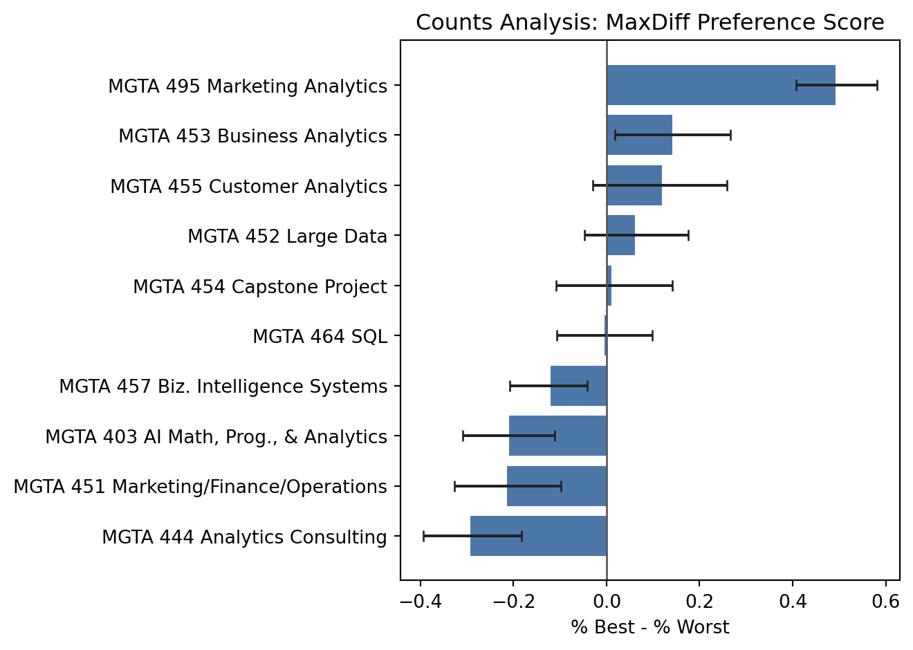
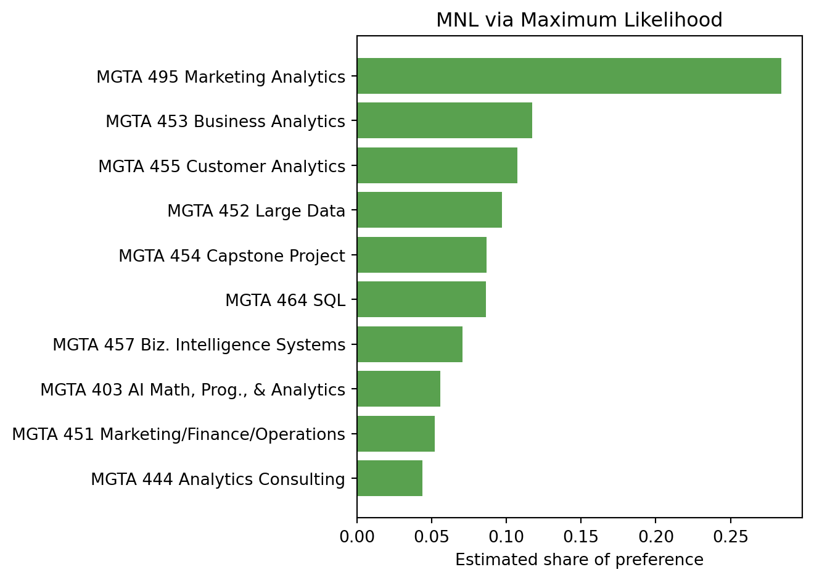
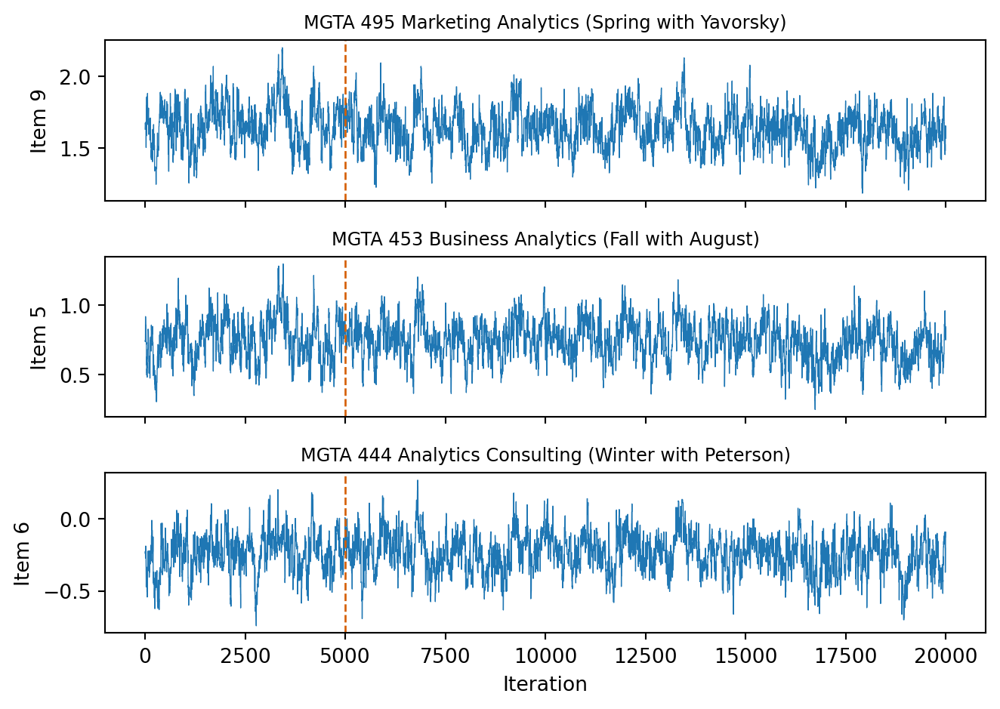
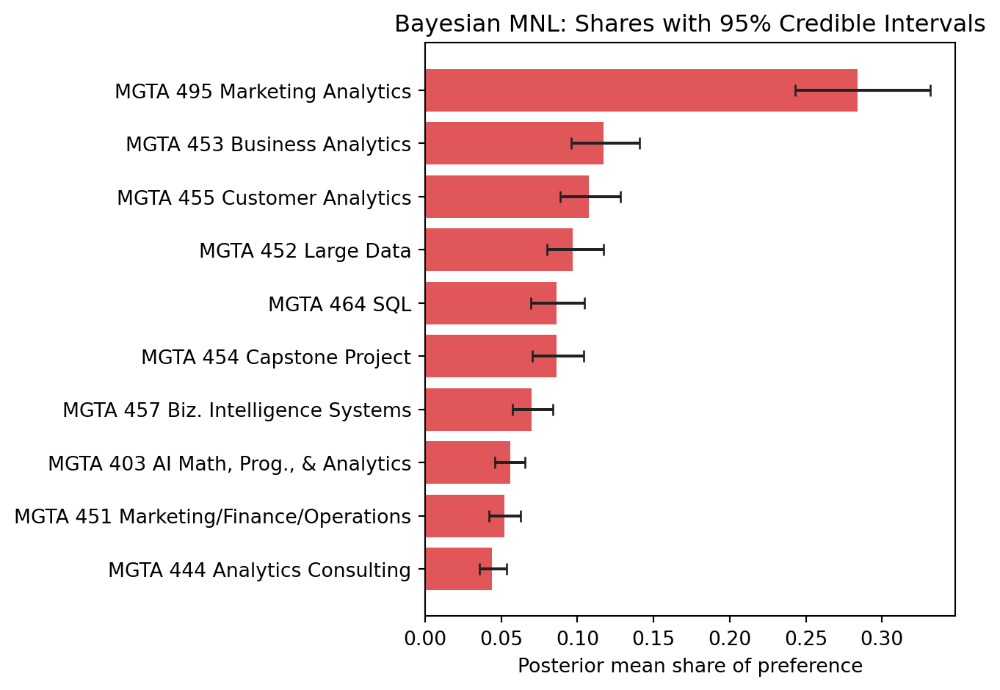
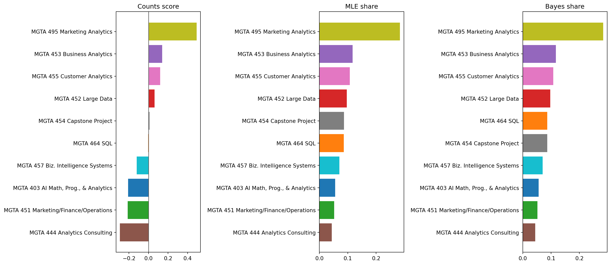

import numpy as np
import pandas as pd
import matplotlib.pyplot as plt
from scipy.optimize import minimize
from scipy.special import logsumexp
pd.set_option("display.max_rows", 20)
pd.set_option("display.max_columns", 20)
pd.set_option("display.float_format", "{:,.4f}".format)
rng = np.random.default_rng(2026)MaxDiff Analysis of MSBA Class Preferences
Counts, MLE, and Bayesian estimation of the MNL model
Introduction
Usually, market research survey ask people to scale things on 1-5 level, but this is pretty subjective as scaling has different meaning amongst different people, how do we make sure we are getting the true results we want?
That is when we need MaxDiff:
MaxDiff, also called Best-Worst Scaling, is a survey method for measuring relative preferences. Instead of asking respondents to rate every item on a numeric scale, each survey screen shows a small subset of options and asks the respondent to choose the most-preferred and least-preferred option. This is useful because people are usually better at making trade-offs than at calibrating whether something is a 7, 8, or 9 on a rating scale. MaxDiff forces differentiation between alternatives and reduces scale-use bias.
In this assignment, the items are core MSBA classes at UCSD Rady. The goal is to estimate how strongly students prefer each class using three approaches: a simple counts analysis, a multinomial logit (MNL) model estimated by maximum likelihood, and the same MNL model estimated with Bayesian Metropolis-Hastings simulation. I expect the three methods to agree on the broad ranking, especially for the most and least preferred classes. The methods should differ mainly in how they quantify preference strength and uncertainty.
The Data
The dataset comes from a MaxDiff survey about MSBA course preferences. The main file, maxdiff_design_and_choices.csv, is in long format: each row is one item shown in one respondent-task screen. Response = 1 means the item was selected as best, Response = -1 means it was selected as worst, and Response = 0 means it was shown but not selected. The label file maps item numbers to course names.
choices_raw = pd.read_csv("maxdiff_design_and_choices.csv", encoding="utf-8-sig")
labels = pd.read_csv("maxdiff_item_labels.csv", encoding="utf-8-sig").iloc[:, :2]
labels.columns = ["Item", "Item_Label"]
labels["Short_Label"] = labels["Item_Label"].str.replace(r" \(.*\)", "", regex=True)
choices = choices_raw.merge(labels, on="Item", how="left")
display(choices.head())
display(labels)| Record ID | Task | Position | Item | Response | Item_Label | Short_Label | |
|---|---|---|---|---|---|---|---|
| 0 | 69fb85fbd66b452e6decf4f7 | 1 | 1 | 5 | 0 | MGTA 453 Business Analytics (Fall with August) | MGTA 453 Business Analytics |
| 1 | 69fb85fbd66b452e6decf4f7 | 1 | 2 | 7 | 1 | MGTA 455 Customer Analytics (Winter with Nijs) | MGTA 455 Customer Analytics |
| 2 | 69fb85fbd66b452e6decf4f7 | 1 | 3 | 4 | 0 | MGTA 452 Large Data (Fall with Hansen) | MGTA 452 Large Data |
| 3 | 69fb85fbd66b452e6decf4f7 | 1 | 4 | 1 | -1 | MGTA 403 AI Math, Prog., & Analytics (Summer w... | MGTA 403 AI Math, Prog., & Analytics |
| 4 | 69fb85fbd66b452e6decf4f7 | 2 | 1 | 8 | -1 | MGTA 454 Capstone Project (Spring with Advisor) | MGTA 454 Capstone Project |
| Item | Item_Label | Short_Label | |
|---|---|---|---|
| 0 | 1 | MGTA 403 AI Math, Prog., & Analytics (Summer w... | MGTA 403 AI Math, Prog., & Analytics |
| 1 | 2 | MGTA 464 SQL (Summer with Nijs) | MGTA 464 SQL |
| 2 | 3 | MGTA 451 Marketing/Finance/Operations (Summer ... | MGTA 451 Marketing/Finance/Operations |
| 3 | 4 | MGTA 452 Large Data (Fall with Hansen) | MGTA 452 Large Data |
| 4 | 5 | MGTA 453 Business Analytics (Fall with August) | MGTA 453 Business Analytics |
| 5 | 6 | MGTA 444 Analytics Consulting (Winter with Pet... | MGTA 444 Analytics Consulting |
| 6 | 7 | MGTA 455 Customer Analytics (Winter with Nijs) | MGTA 455 Customer Analytics |
| 7 | 8 | MGTA 454 Capstone Project (Spring with Advisor) | MGTA 454 Capstone Project |
| 8 | 9 | MGTA 495 Marketing Analytics (Spring with Yavo... | MGTA 495 Marketing Analytics |
| 9 | 10 | MGTA 457 Biz. Intelligence Systems (Fall with ... | MGTA 457 Biz. Intelligence Systems |
The raw file contains 85 respondents and 15 task numbers per respondent, but the task structure is not uniform. The label file contains 10 classes, while the raw choice file contains an additional unlabeled Item = 11. That extra item appears only in tasks with two rows, one best pick, and no worst pick. In other words, those rows do not match the four-item MaxDiff structure described in the assignment. The interpretation is that tasks 9-15 are a different appended exercise, likely a two-option best-only follow-up involving an unlabeled outside item; or a internal ranking score performed by system after task 1-8 is completed. Either way, it is better to exclude them from the 10-class MaxDiff analysis.
labeled_items = set(labels["Item"])
task_summary = (
choices.groupby(["Record ID", "Task"])
.agg(
rows=("Item", "size"),
best_count=("Response", lambda x: (x == 1).sum()),
worst_count=("Response", lambda x: (x == -1).sum()),
zero_count=("Response", lambda x: (x == 0).sum()),
all_labeled=("Item", lambda x: x.isin(labeled_items).all()),
contains_item_11=("Item", lambda x: (x == 11).any()),
)
.reset_index()
)
raw_summary = pd.DataFrame(
{
"Metric": [
"Respondents",
"Raw task numbers per respondent",
"Raw task screens",
"Rows in raw file",
"Unique raw items",
"Rows with unlabeled Item = 11",
"Task screens containing Item = 11",
],
"Value": [
choices["Record ID"].nunique(),
task_summary.groupby("Record ID")["Task"].nunique().iloc[0],
len(task_summary),
len(choices),
choices["Item"].nunique(),
int((choices["Item"] == 11).sum()),
int(task_summary["contains_item_11"].sum()),
],
}
)
display(raw_summary)
structure_table = (
task_summary.groupby(
["rows", "best_count", "worst_count", "zero_count", "all_labeled"],
dropna=False,
)
.size()
.reset_index(name="task_screens")
.sort_values(["rows", "best_count", "worst_count"])
)
display(structure_table)| Metric | Value | |
|---|---|---|
| 0 | Respondents | 85 |
| 1 | Raw task numbers per respondent | 15 |
| 2 | Raw task screens | 1275 |
| 3 | Rows in raw file | 3910 |
| 4 | Unique raw items | 11 |
| 5 | Rows with unlabeled Item = 11 | 595 |
| 6 | Task screens containing Item = 11 | 595 |
| rows | best_count | worst_count | zero_count | all_labeled | task_screens | |
|---|---|---|---|---|---|---|
| 0 | 2 | 1 | 0 | 1 | False | 595 |
| 1 | 4 | 1 | 1 | 2 | True | 680 |
For the analysis below, I keep only valid MaxDiff tasks: four rows, exactly one best pick, exactly one worst pick, two non-selected rows, and all items labeled as one of the 10 courses. This leaves 680 valid task screens, or 8 valid tasks per respondent. Each task contributes four shown alternatives, so the modeling dataset contains 2,720 item rows.
valid_task_keys = task_summary.loc[
(task_summary["rows"] == 4)
& (task_summary["best_count"] == 1)
& (task_summary["worst_count"] == 1)
& (task_summary["zero_count"] == 2)
& (task_summary["all_labeled"]),
["Record ID", "Task"],
]
valid_choices = choices.merge(valid_task_keys, on=["Record ID", "Task"], how="inner")
valid_summary = pd.DataFrame(
{
"Metric": [
"Respondents",
"Valid MaxDiff tasks per respondent",
"Valid MaxDiff task screens",
"Rows used in MaxDiff analysis",
"Items per task",
"Labeled classes analyzed",
],
"Value": [
valid_choices["Record ID"].nunique(),
valid_task_keys.groupby("Record ID")["Task"].nunique().iloc[0],
len(valid_task_keys),
len(valid_choices),
valid_choices.groupby(["Record ID", "Task"]).size().iloc[0],
labels["Item"].nunique(),
],
}
)
display(valid_summary)
item_exposure = (
valid_choices.groupby(["Item", "Item_Label"])
.size()
.reset_index(name="Times_Shown")
.sort_values("Item")
)
display(item_exposure)| Metric | Value | |
|---|---|---|
| 0 | Respondents | 85 |
| 1 | Valid MaxDiff tasks per respondent | 8 |
| 2 | Valid MaxDiff task screens | 680 |
| 3 | Rows used in MaxDiff analysis | 2720 |
| 4 | Items per task | 4 |
| 5 | Labeled classes analyzed | 10 |
| Item | Item_Label | Times_Shown | |
|---|---|---|---|
| 0 | 1 | MGTA 403 AI Math, Prog., & Analytics (Summer w... | 273 |
| 1 | 2 | MGTA 464 SQL (Summer with Nijs) | 274 |
| 2 | 3 | MGTA 451 Marketing/Finance/Operations (Summer ... | 272 |
| 3 | 4 | MGTA 452 Large Data (Fall with Hansen) | 276 |
| 4 | 5 | MGTA 453 Business Analytics (Fall with August) | 270 |
| 5 | 6 | MGTA 444 Analytics Consulting (Winter with Pet... | 267 |
| 6 | 7 | MGTA 455 Customer Analytics (Winter with Nijs) | 276 |
| 7 | 8 | MGTA 454 Capstone Project (Spring with Advisor) | 272 |
| 8 | 9 | MGTA 495 Marketing Analytics (Spring with Yavo... | 274 |
| 9 | 10 | MGTA 457 Biz. Intelligence Systems (Fall with ... | 266 |
The valid design is reasonably balanced. Each labeled class is shown between 266 and 276 times, so the exposure counts are close enough that differences in preference are not being driven by one course appearing far more often than another.
Counts Analysis
The counts analysis is the simplest way to summarize MaxDiff results. For each class, we compute the percentage of times it was chosen as best out of the times it was shown, the percentage of times it was chosen as worst, and then subtract the two:
\[ \text{score}_j = \%\text{best}_j - \%\text{worst}_j. \]
A score near +1 means the class is almost always picked as best when shown. A score near -1 means it is almost always picked as worst. A score near 0 means the class is either middle-of-the-pack or gets mixed reactions.
counts_table = (
valid_choices.groupby(["Item", "Item_Label", "Short_Label"])
.agg(
times_shown=("Response", "size"),
times_best=("Response", lambda x: (x == 1).sum()),
times_worst=("Response", lambda x: (x == -1).sum()),
)
.reset_index()
)
counts_table["pct_best"] = counts_table["times_best"] / counts_table["times_shown"]
counts_table["pct_worst"] = counts_table["times_worst"] / counts_table["times_shown"]
counts_table["counts_score"] = counts_table["pct_best"] - counts_table["pct_worst"]
counts_table = counts_table.sort_values("counts_score", ascending=False).reset_index(drop=True)
counts_table["counts_rank"] = np.arange(1, len(counts_table) + 1)
display(counts_table)| Item | Item_Label | Short_Label | times_shown | times_best | times_worst | pct_best | pct_worst | counts_score | counts_rank | |
|---|---|---|---|---|---|---|---|---|---|---|
| 0 | 9 | MGTA 495 Marketing Analytics (Spring with Yavo... | MGTA 495 Marketing Analytics | 274 | 147 | 12 | 0.5365 | 0.0438 | 0.4927 | 1 |
| 1 | 5 | MGTA 453 Business Analytics (Fall with August) | MGTA 453 Business Analytics | 270 | 93 | 55 | 0.3444 | 0.2037 | 0.1407 | 2 |
| 2 | 7 | MGTA 455 Customer Analytics (Winter with Nijs) | MGTA 455 Customer Analytics | 276 | 104 | 71 | 0.3768 | 0.2572 | 0.1196 | 3 |
| 3 | 4 | MGTA 452 Large Data (Fall with Hansen) | MGTA 452 Large Data | 276 | 77 | 60 | 0.2790 | 0.2174 | 0.0616 | 4 |
| 4 | 8 | MGTA 454 Capstone Project (Spring with Advisor) | MGTA 454 Capstone Project | 272 | 72 | 69 | 0.2647 | 0.2537 | 0.0110 | 5 |
| 5 | 2 | MGTA 464 SQL (Summer with Nijs) | MGTA 464 SQL | 274 | 55 | 56 | 0.2007 | 0.2044 | -0.0036 | 6 |
| 6 | 10 | MGTA 457 Biz. Intelligence Systems (Fall with ... | MGTA 457 Biz. Intelligence Systems | 266 | 23 | 55 | 0.0865 | 0.2068 | -0.1203 | 7 |
| 7 | 1 | MGTA 403 AI Math, Prog., & Analytics (Summer w... | MGTA 403 AI Math, Prog., & Analytics | 273 | 33 | 90 | 0.1209 | 0.3297 | -0.2088 | 8 |
| 8 | 3 | MGTA 451 Marketing/Finance/Operations (Summer ... | MGTA 451 Marketing/Finance/Operations | 272 | 43 | 101 | 0.1581 | 0.3713 | -0.2132 | 9 |
| 9 | 6 | MGTA 444 Analytics Consulting (Winter with Pet... | MGTA 444 Analytics Consulting | 267 | 33 | 111 | 0.1236 | 0.4157 | -0.2921 | 10 |
I also bootstrap confidence intervals by resampling respondents with replacement. This keeps each respondent’s set of tasks together, which is more appropriate than resampling individual rows.
B = 1000
respondent_ids = valid_choices["Record ID"].unique()
boot_scores = np.zeros((B, len(labels)))
for b in range(B):
sampled_ids = rng.choice(respondent_ids, size=len(respondent_ids), replace=True)
sampled = pd.concat(
[valid_choices.loc[valid_choices["Record ID"] == rid] for rid in sampled_ids],
ignore_index=True,
)
boot = (
sampled.groupby("Item")
.agg(
times_shown=("Response", "size"),
times_best=("Response", lambda x: (x == 1).sum()),
times_worst=("Response", lambda x: (x == -1).sum()),
)
.reindex(labels["Item"])
)
boot_scores[b, :] = (
boot["times_best"] / boot["times_shown"]
- boot["times_worst"] / boot["times_shown"]
)
count_ci = pd.DataFrame(
{
"Item": labels["Item"],
"score_low": np.quantile(boot_scores, 0.025, axis=0),
"score_high": np.quantile(boot_scores, 0.975, axis=0),
}
)
counts_table = counts_table.merge(count_ci, on="Item", how="left")
display(counts_table)| Item | Item_Label | Short_Label | times_shown | times_best | times_worst | pct_best | pct_worst | counts_score | counts_rank | score_low | score_high | |
|---|---|---|---|---|---|---|---|---|---|---|---|---|
| 0 | 9 | MGTA 495 Marketing Analytics (Spring with Yavo... | MGTA 495 Marketing Analytics | 274 | 147 | 12 | 0.5365 | 0.0438 | 0.4927 | 1 | 0.4074 | 0.5815 |
| 1 | 5 | MGTA 453 Business Analytics (Fall with August) | MGTA 453 Business Analytics | 270 | 93 | 55 | 0.3444 | 0.2037 | 0.1407 | 2 | 0.0180 | 0.2655 |
| 2 | 7 | MGTA 455 Customer Analytics (Winter with Nijs) | MGTA 455 Customer Analytics | 276 | 104 | 71 | 0.3768 | 0.2572 | 0.1196 | 3 | -0.0289 | 0.2593 |
| 3 | 4 | MGTA 452 Large Data (Fall with Hansen) | MGTA 452 Large Data | 276 | 77 | 60 | 0.2790 | 0.2174 | 0.0616 | 4 | -0.0480 | 0.1754 |
| 4 | 8 | MGTA 454 Capstone Project (Spring with Advisor) | MGTA 454 Capstone Project | 272 | 72 | 69 | 0.2647 | 0.2537 | 0.0110 | 5 | -0.1087 | 0.1413 |
| 5 | 2 | MGTA 464 SQL (Summer with Nijs) | MGTA 464 SQL | 274 | 55 | 56 | 0.2007 | 0.2044 | -0.0036 | 6 | -0.1070 | 0.0985 |
| 6 | 10 | MGTA 457 Biz. Intelligence Systems (Fall with ... | MGTA 457 Biz. Intelligence Systems | 266 | 23 | 55 | 0.0865 | 0.2068 | -0.1203 | 7 | -0.2076 | -0.0415 |
| 7 | 1 | MGTA 403 AI Math, Prog., & Analytics (Summer w... | MGTA 403 AI Math, Prog., & Analytics | 273 | 33 | 90 | 0.1209 | 0.3297 | -0.2088 | 8 | -0.3094 | -0.1111 |
| 8 | 3 | MGTA 451 Marketing/Finance/Operations (Summer ... | MGTA 451 Marketing/Finance/Operations | 272 | 43 | 101 | 0.1581 | 0.3713 | -0.2132 | 9 | -0.3273 | -0.0981 |
| 9 | 6 | MGTA 444 Analytics Consulting (Winter with Pet... | MGTA 444 Analytics Consulting | 267 | 33 | 111 | 0.1236 | 0.4157 | -0.2921 | 10 | -0.3939 | -0.1821 |
plot_counts = counts_table.sort_values("counts_score", ascending=True)
fig, ax = plt.subplots()
ax.barh(plot_counts["Short_Label"], plot_counts["counts_score"], color="#4C78A8")
ax.errorbar(
plot_counts["counts_score"],
plot_counts["Short_Label"],
xerr=[
plot_counts["counts_score"] - plot_counts["score_low"],
plot_counts["score_high"] - plot_counts["counts_score"],
],
fmt="none",
ecolor="#222222",
capsize=3,
)
ax.axvline(0, color="#555555", linewidth=1)
ax.set_xlabel("% Best - % Worst")
ax.set_ylabel("")
ax.set_title("Counts Analysis: MaxDiff Preference Score")
plt.tight_layout()
plt.show()
The counts analysis shows a clear winner: MGTA 495 Marketing Analytics has by far the highest score. It was selected as best in about 54% of its appearances and worst in only about 4%, giving it a score near 0.49. However, I would not 100% trust the survey results, due to: Professor Dan is a really interesting professor, students might naturally rank him high for any courses he teach; also we could never rule out the fact that the survey is released on this course, so students tend to provide better review for their own scores.
The next group is MGTA 453 Business Analytics and MGTA 455 Customer Analytics, both positive but much closer to the middle. At the bottom, MGTA 444 Analytics Consulting has the lowest score, followed by MGTA 451 Marketing/Finance/Operations and MGTA 403 AI Math, Programming, and Analytics.
From MaxDiff Data to MNL Choices
To fit an MNL model, I treat each MaxDiff task as two linked choice observations. First, the respondent chooses the best item from the four shown items. If the four shown classes are \(\{a,b,c,d\}\), the MNL probability that class \(b\) is selected as best is:
\[ P(\text{best}=b) = \frac{\exp(\beta_b)} {\exp(\beta_a)+\exp(\beta_b)+\exp(\beta_c)+\exp(\beta_d)}. \]
Second, after the best item is removed, the respondent chooses the worst item from the remaining three. This can be modeled by flipping the sign of utility, because an item with high positive utility should have low probability of being selected as worst:
\[ P(\text{worst}=c \mid \text{best}=b) = \frac{\exp(-\beta_c)} {\exp(-\beta_a)+\exp(-\beta_c)+\exp(-\beta_d)}. \]
The coefficients are only identified up to an additive constant, so I normalize \(\beta_1 = 0\) and estimate the other nine item utilities relative to MGTA 403. This means positive coefficients are preferred to the reference class, while negative coefficients are less preferred.
task_cols = ["Record ID", "Task"]
shown_df = (
valid_choices.sort_values(task_cols + ["Position"])
.groupby(task_cols)["Item"]
.apply(lambda s: s.to_numpy(dtype=int) - 1)
.reset_index(name="shown")
)
best_df = (
valid_choices.loc[valid_choices["Response"] == 1, task_cols + ["Item"]]
.rename(columns={"Item": "best"})
.sort_values(task_cols)
)
worst_df = (
valid_choices.loc[valid_choices["Response"] == -1, task_cols + ["Item"]]
.rename(columns={"Item": "worst"})
.sort_values(task_cols)
)
task_data = shown_df.merge(best_df, on=task_cols).merge(worst_df, on=task_cols)
shown = np.vstack(task_data["shown"].to_numpy())
best = task_data["best"].to_numpy(dtype=int) - 1
worst = task_data["worst"].to_numpy(dtype=int) - 1
remaining = np.vstack([row[row != b] for row, b in zip(shown, best)])
print(f"Prepared {len(task_data)} valid MaxDiff tasks.")
print(f"Each task has {shown.shape[1]} best-choice alternatives and {remaining.shape[1]} worst-choice alternatives after removing the best pick.")Prepared 680 valid MaxDiff tasks.
Each task has 4 best-choice alternatives and 3 worst-choice alternatives after removing the best pick.MNL via Maximum Likelihood
The MNL likelihood multiplies the probability of the observed best pick and the observed worst pick for each task. In log form, the contribution from one task is:
\[ \beta_{j_b^*} - \log\sum_{j \in \text{shown}}\exp(\beta_j) - \beta_{j_w^*} - \log\sum_{j \in \text{shown}\setminus\{j_b^*\}}\exp(-\beta_j). \]
Summing this expression over all valid tasks gives the log-likelihood. I maximize it with BFGS, using \(\beta_1 = 0\) as the reference normalization. I then convert the estimated utilities into shares of preference:
\[ \hat{s}_j = \frac{\exp(\hat{\beta}_j)} {\sum_k \exp(\hat{\beta}_k)}. \]
These shares are easier to interpret than raw utilities because they sum to 1 across the 10 classes. They answer the question: if all 10 classes were placed on one screen, what share of choices would each class receive under the fitted model?
def unpack_beta(theta):
"""Insert the normalized reference coefficient beta_1 = 0."""
return np.r_[0.0, theta]
def log_likelihood(theta):
beta = unpack_beta(theta)
best_part = beta[best] - logsumexp(beta[shown], axis=1)
worst_part = -beta[worst] - logsumexp(-beta[remaining], axis=1)
return float(np.sum(best_part + worst_part))
def gradient(theta):
beta = unpack_beta(theta)
grad = np.zeros(len(labels))
best_probs = np.exp(beta[shown] - logsumexp(beta[shown], axis=1, keepdims=True))
np.add.at(grad, best, 1.0)
for col in range(shown.shape[1]):
np.add.at(grad, shown[:, col], -best_probs[:, col])
worst_probs = np.exp(
-beta[remaining] - logsumexp(-beta[remaining], axis=1, keepdims=True)
)
np.add.at(grad, worst, -1.0)
for col in range(remaining.shape[1]):
np.add.at(grad, remaining[:, col], worst_probs[:, col])
return grad[1:]
def negative_hessian(theta):
beta = unpack_beta(theta)
hessian = np.zeros((len(labels), len(labels)))
best_probs = np.exp(beta[shown] - logsumexp(beta[shown], axis=1, keepdims=True))
for row_items, probs in zip(shown, best_probs):
cov = np.diag(probs) - np.outer(probs, probs)
hessian[np.ix_(row_items, row_items)] += cov
worst_probs = np.exp(
-beta[remaining] - logsumexp(-beta[remaining], axis=1, keepdims=True)
)
for row_items, probs in zip(remaining, worst_probs):
cov = np.diag(probs) - np.outer(probs, probs)
hessian[np.ix_(row_items, row_items)] += cov
return hessian[1:, 1:]initial = np.zeros(len(labels) - 1)
mle_out = minimize(
lambda theta: -log_likelihood(theta),
initial,
jac=lambda theta: -gradient(theta),
method="BFGS",
options={"gtol": 1e-8, "maxiter": 1000},
)
beta_mle = unpack_beta(mle_out.x)
cov_mle = np.linalg.inv(negative_hessian(mle_out.x))
se_mle = np.r_[np.nan, np.sqrt(np.diag(cov_mle))]
mle_share = np.exp(beta_mle) / np.exp(beta_mle).sum()
mle_table = labels.copy()
mle_table["beta_mle"] = beta_mle
mle_table["se_mle"] = se_mle
mle_table["mle_share"] = mle_share
mle_table = mle_table.sort_values("mle_share", ascending=False).reset_index(drop=True)
mle_table["mle_rank"] = np.arange(1, len(mle_table) + 1)
print(f"Converged: {mle_out.success}")
print(f"Maximized log-likelihood: {log_likelihood(mle_out.x):,.3f}")
display(mle_table)Converged: True
Maximized log-likelihood: -1,572.731| Item | Item_Label | Short_Label | beta_mle | se_mle | mle_share | mle_rank | |
|---|---|---|---|---|---|---|---|
| 0 | 9 | MGTA 495 Marketing Analytics (Spring with Yavo... | MGTA 495 Marketing Analytics | 1.6298 | 0.1462 | 0.2839 | 1 |
| 1 | 5 | MGTA 453 Business Analytics (Fall with August) | MGTA 453 Business Analytics | 0.7445 | 0.1418 | 0.1171 | 2 |
| 2 | 7 | MGTA 455 Customer Analytics (Winter with Nijs) | MGTA 455 Customer Analytics | 0.6563 | 0.1424 | 0.1072 | 3 |
| 3 | 4 | MGTA 452 Large Data (Fall with Hansen) | MGTA 452 Large Data | 0.5553 | 0.1399 | 0.0969 | 4 |
| 4 | 8 | MGTA 454 Capstone Project (Spring with Advisor) | MGTA 454 Capstone Project | 0.4433 | 0.1397 | 0.0867 | 5 |
| 5 | 2 | MGTA 464 SQL (Summer with Nijs) | MGTA 464 SQL | 0.4380 | 0.1373 | 0.0862 | 6 |
| 6 | 10 | MGTA 457 Biz. Intelligence Systems (Fall with ... | MGTA 457 Biz. Intelligence Systems | 0.2359 | 0.1370 | 0.0704 | 7 |
| 7 | 1 | MGTA 403 AI Math, Prog., & Analytics (Summer w... | MGTA 403 AI Math, Prog., & Analytics | 0.0000 | NaN | 0.0556 | 8 |
| 8 | 3 | MGTA 451 Marketing/Finance/Operations (Summer ... | MGTA 451 Marketing/Finance/Operations | -0.0666 | 0.1395 | 0.0520 | 9 |
| 9 | 6 | MGTA 444 Analytics Consulting (Winter with Pet... | MGTA 444 Analytics Consulting | -0.2388 | 0.1406 | 0.0438 | 10 |
plot_mle = mle_table.sort_values("mle_share", ascending=True)
fig, ax = plt.subplots()
ax.barh(plot_mle["Short_Label"], plot_mle["mle_share"], color="#59A14F")
ax.set_xlabel("Estimated share of preference")
ax.set_ylabel("")
ax.set_title("MNL via Maximum Likelihood")
plt.tight_layout()
plt.show()
The MLE ranking is identical to the counts ranking. Marketing Analytics remains the clear top class with an estimated share of preference around 28%. Business Analytics and Customer Analytics are next, while Analytics Consulting has the lowest share at about 4%. The MNL results are useful because they come from an explicit probability model of the choice process rather than only a descriptive count of best and worst selections.
MNL via Bayesian Estimation
For the Bayesian version, we estimate the same MNL model but treat the coefficients as random variables. The posterior is proportional to the likelihood times the prior:
\[ \pi(\boldsymbol{\beta} \mid y) \propto L(\boldsymbol{\beta})\pi(\boldsymbol{\beta}). \]
I use a weakly informative normal prior, \(\beta_j \sim N(0,10)\) for the nine estimated coefficients. This prior is wide enough to let the data dominate, but it prevents extreme utility values that are not supported by the sample. I sample from the posterior with a random-walk Metropolis-Hastings algorithm.
prior_var = 10.0
def log_posterior(theta):
prior_log_density = np.sum(
-0.5 * np.log(2 * np.pi * prior_var) - theta**2 / (2 * prior_var)
)
return log_likelihood(theta) + prior_log_density
def metropolis(beta0, n_iter, step, seed=2026):
local_rng = np.random.default_rng(seed)
draws = np.empty((n_iter, len(beta0)))
beta_current = beta0.copy()
lp_current = log_posterior(beta_current)
accepted = 0
for t in range(n_iter):
beta_proposed = beta_current + local_rng.normal(0, step, size=len(beta0))
lp_proposed = log_posterior(beta_proposed)
if np.log(local_rng.random()) < lp_proposed - lp_current:
beta_current = beta_proposed
lp_current = lp_proposed
accepted += 1
draws[t, :] = beta_current
return draws, accepted / n_iterstep_tests = []
for step in [0.04, 0.06, 0.08, 0.10]:
_, accept = metropolis(mle_out.x, n_iter=2000, step=step, seed=2026)
step_tests.append({"step_size": step, "acceptance_rate": accept})
step_tests = pd.DataFrame(step_tests)
display(step_tests)
draws_free, accept_rate = metropolis(mle_out.x, n_iter=20000, step=0.08, seed=2026)
burn = int(0.25 * len(draws_free))
post_free = draws_free[burn:, :]
post_beta = np.column_stack([np.zeros(len(post_free)), post_free])
print(f"Final acceptance rate: {accept_rate:.3f}")
print(f"Burn-in draws discarded: {burn:,}")
print(f"Posterior draws retained: {len(post_beta):,}")| step_size | acceptance_rate | |
|---|---|---|
| 0 | 0.0400 | 0.5940 |
| 1 | 0.0600 | 0.4035 |
| 2 | 0.0800 | 0.2970 |
| 3 | 0.1000 | 0.2005 |
Final acceptance rate: 0.282
Burn-in draws discarded: 5,000
Posterior draws retained: 15,000trace_items = [9, 5, 6]
fig, axes = plt.subplots(len(trace_items), 1, sharex=True)
for ax, item in zip(axes, trace_items):
ax.plot(draws_free[:, item - 2] if item > 1 else np.zeros(len(draws_free)), linewidth=0.5)
ax.axvline(burn, color="#D55E00", linestyle="--", linewidth=1)
label = labels.loc[labels["Item"] == item, "Item_Label"].iloc[0]
ax.set_ylabel(f"Item {item}")
ax.set_title(label, fontsize=9)
axes[-1].set_xlabel("Iteration")
plt.tight_layout()
plt.show()
The tuned step size of 0.08 gives an acceptance rate near the desired 25-40% range. The trace plots are noisy rather than steadily drifting after burn-in, which suggests that the chain is exploring a stable posterior region.
beta_mean = post_beta.mean(axis=0)
beta_low = np.quantile(post_beta, 0.025, axis=0)
beta_high = np.quantile(post_beta, 0.975, axis=0)
beta_sd = post_beta.std(axis=0, ddof=1)
share_draws = np.exp(post_beta) / np.exp(post_beta).sum(axis=1, keepdims=True)
share_mean = share_draws.mean(axis=0)
share_low = np.quantile(share_draws, 0.025, axis=0)
share_high = np.quantile(share_draws, 0.975, axis=0)
bayes_table = labels.copy()
bayes_table["beta_mean"] = beta_mean
bayes_table["beta_low"] = beta_low
bayes_table["beta_high"] = beta_high
bayes_table["beta_sd"] = beta_sd
bayes_table["bayes_share"] = share_mean
bayes_table["share_low"] = share_low
bayes_table["share_high"] = share_high
bayes_table = bayes_table.sort_values("bayes_share", ascending=False).reset_index(drop=True)
bayes_table["bayes_rank"] = np.arange(1, len(bayes_table) + 1)
display(bayes_table)| Item | Item_Label | Short_Label | beta_mean | beta_low | beta_high | beta_sd | bayes_share | share_low | share_high | bayes_rank | |
|---|---|---|---|---|---|---|---|---|---|---|---|
| 0 | 9 | MGTA 495 Marketing Analytics (Spring with Yavo... | MGTA 495 Marketing Analytics | 1.6287 | 1.3659 | 1.8971 | 0.1359 | 0.2838 | 0.2430 | 0.3315 | 1 |
| 1 | 5 | MGTA 453 Business Analytics (Fall with August) | MGTA 453 Business Analytics | 0.7430 | 0.4657 | 1.0037 | 0.1363 | 0.1172 | 0.0961 | 0.1408 | 2 |
| 2 | 7 | MGTA 455 Customer Analytics (Winter with Nijs) | MGTA 455 Customer Analytics | 0.6569 | 0.4019 | 0.9248 | 0.1322 | 0.1075 | 0.0888 | 0.1282 | 3 |
| 3 | 4 | MGTA 452 Large Data (Fall with Hansen) | MGTA 452 Large Data | 0.5533 | 0.2937 | 0.8352 | 0.1369 | 0.0970 | 0.0801 | 0.1173 | 4 |
| 4 | 2 | MGTA 464 SQL (Summer with Nijs) | MGTA 464 SQL | 0.4374 | 0.1600 | 0.6952 | 0.1376 | 0.0864 | 0.0696 | 0.1048 | 5 |
| 5 | 8 | MGTA 454 Capstone Project (Spring with Advisor) | MGTA 454 Capstone Project | 0.4362 | 0.1727 | 0.7051 | 0.1337 | 0.0863 | 0.0706 | 0.1040 | 6 |
| 6 | 10 | MGTA 457 Biz. Intelligence Systems (Fall with ... | MGTA 457 Biz. Intelligence Systems | 0.2293 | -0.0296 | 0.4782 | 0.1278 | 0.0701 | 0.0576 | 0.0837 | 7 |
| 7 | 1 | MGTA 403 AI Math, Prog., & Analytics (Summer w... | MGTA 403 AI Math, Prog., & Analytics | 0.0000 | 0.0000 | 0.0000 | 0.0000 | 0.0557 | 0.0460 | 0.0658 | 8 |
| 8 | 3 | MGTA 451 Marketing/Finance/Operations (Summer ... | MGTA 451 Marketing/Finance/Operations | -0.0733 | -0.3405 | 0.2020 | 0.1365 | 0.0519 | 0.0422 | 0.0625 | 9 |
| 9 | 6 | MGTA 444 Analytics Consulting (Winter with Pet... | MGTA 444 Analytics Consulting | -0.2388 | -0.5053 | 0.0163 | 0.1316 | 0.0440 | 0.0358 | 0.0536 | 10 |
plot_bayes = bayes_table.sort_values("bayes_share", ascending=True)
fig, ax = plt.subplots()
ax.barh(plot_bayes["Short_Label"], plot_bayes["bayes_share"], color="#E15759")
ax.errorbar(
plot_bayes["bayes_share"],
plot_bayes["Short_Label"],
xerr=[
plot_bayes["bayes_share"] - plot_bayes["share_low"],
plot_bayes["share_high"] - plot_bayes["bayes_share"],
],
fmt="none",
ecolor="#222222",
capsize=3,
)
ax.set_xlabel("Posterior mean share of preference")
ax.set_ylabel("")
ax.set_title("Bayesian MNL: Shares with 95% Credible Intervals")
plt.tight_layout()
plt.show()
The Bayesian posterior means are very close to the MLE point estimates, which is expected because the prior is weak and the sample has many observed choices. The posterior standard deviations are also close to the MLE standard errors. The only visible ranking difference is in the middle: SQL and Capstone have nearly identical shares, so the Bayesian posterior mean can place SQL just ahead of Capstone even though the counts and MLE rankings put Capstone slightly ahead. The main advantage of the Bayesian version is that uncertainty is easy to carry through to derived quantities such as shares: I can compute shares for every posterior draw and then report credible intervals directly.
Comparing the Three Methods
The table below combines the descriptive counts score, the MLE preference share, and the Bayesian posterior mean share. The methods produce almost the same ranking on this dataset; the only difference is a tiny middle-of-the-table swap between SQL and Capstone in the Bayesian posterior mean shares.
comparison = (
counts_table[
["Item", "Item_Label", "Short_Label", "counts_score", "counts_rank"]
]
.merge(mle_table[["Item", "mle_share", "mle_rank"]], on="Item")
.merge(bayes_table[["Item", "bayes_share", "bayes_rank"]], on="Item")
.sort_values("mle_rank")
.reset_index(drop=True)
)
display(comparison)| Item | Item_Label | Short_Label | counts_score | counts_rank | mle_share | mle_rank | bayes_share | bayes_rank | |
|---|---|---|---|---|---|---|---|---|---|
| 0 | 9 | MGTA 495 Marketing Analytics (Spring with Yavo... | MGTA 495 Marketing Analytics | 0.4927 | 1 | 0.2839 | 1 | 0.2838 | 1 |
| 1 | 5 | MGTA 453 Business Analytics (Fall with August) | MGTA 453 Business Analytics | 0.1407 | 2 | 0.1171 | 2 | 0.1172 | 2 |
| 2 | 7 | MGTA 455 Customer Analytics (Winter with Nijs) | MGTA 455 Customer Analytics | 0.1196 | 3 | 0.1072 | 3 | 0.1075 | 3 |
| 3 | 4 | MGTA 452 Large Data (Fall with Hansen) | MGTA 452 Large Data | 0.0616 | 4 | 0.0969 | 4 | 0.0970 | 4 |
| 4 | 8 | MGTA 454 Capstone Project (Spring with Advisor) | MGTA 454 Capstone Project | 0.0110 | 5 | 0.0867 | 5 | 0.0863 | 6 |
| 5 | 2 | MGTA 464 SQL (Summer with Nijs) | MGTA 464 SQL | -0.0036 | 6 | 0.0862 | 6 | 0.0864 | 5 |
| 6 | 10 | MGTA 457 Biz. Intelligence Systems (Fall with ... | MGTA 457 Biz. Intelligence Systems | -0.1203 | 7 | 0.0704 | 7 | 0.0701 | 7 |
| 7 | 1 | MGTA 403 AI Math, Prog., & Analytics (Summer w... | MGTA 403 AI Math, Prog., & Analytics | -0.2088 | 8 | 0.0556 | 8 | 0.0557 | 8 |
| 8 | 3 | MGTA 451 Marketing/Finance/Operations (Summer ... | MGTA 451 Marketing/Finance/Operations | -0.2132 | 9 | 0.0520 | 9 | 0.0519 | 9 |
| 9 | 6 | MGTA 444 Analytics Consulting (Winter with Pet... | MGTA 444 Analytics Consulting | -0.2921 | 10 | 0.0438 | 10 | 0.0440 | 10 |
color_map = {
item: color
for item, color in zip(labels["Item"], plt.get_cmap("tab10").colors)
}
panels = [
("Counts score", "counts_score", counts_table),
("MLE share", "mle_share", comparison),
("Bayes share", "bayes_share", comparison),
]
fig, axes = plt.subplots(1, 3, figsize=(16, 7))
for ax, (title, metric, data) in zip(axes, panels):
plot_data = data.sort_values(metric, ascending=True)
ax.barh(
plot_data["Short_Label"],
plot_data[metric],
color=[color_map[item] for item in plot_data["Item"]],
)
ax.set_title(title)
ax.set_ylabel("")
if metric == "counts_score":
ax.axvline(0, color="#555555", linewidth=1)
plt.tight_layout()
plt.show()
The methods agree most strongly at the top and bottom. MGTA 495 Marketing Analytics is the clear favorite under all three approaches, and MGTA 444 Analytics Consulting is consistently last. The small disagreement appears in the middle: Capstone Project and SQL have nearly equal shares, so the Bayesian posterior mean places SQL just ahead of Capstone while counts and MLE place Capstone just ahead of SQL. The MNL model adds value over counts because it models the choice process directly: every shown item contributes information, including the fact that it was not selected as best or worst. The Bayesian model adds value over MLE because it gives direct uncertainty intervals for shares of preference without needing a delta-method approximation.
Discussion
Substantively, the strongest finding is that students in this sample most prefer MGTA 495 Marketing Analytics. It stands well above the rest of the field in the counts analysis and receives the largest estimated share in both MNL models. MGTA 453 Business Analytics and MGTA 455 Customer Analytics form the next tier. At the bottom, MGTA 444 Analytics Consulting, MGTA 451 Marketing/Finance/Operations, and MGTA 403 AI Math, Programming, and Analytics are less preferred in this survey sample.
More personal point of view from the survey results would be: 1. Professor Dan’s course is really nice, don’t miss it, and try to take it earlier if you can. (so would have nice personal websites, with lots of demo + interesting marketing/stats knowledge for future) 2. Analytics Consulting & BA in Marketing/Finance/Operations are poorly designed core course, the Rady MSBA committee could probably think more for future on usefulness of these courses.
Methodologically, the counts analysis is best for a quick executive summary because it is transparent and easy to explain. The MLE MNL model is better when we want a formal choice model, point estimates, standard errors, and preference shares. The Bayesian MNL model is most useful when uncertainty in derived quantities matters, such as shares, simulations, or future extensions to individual-level preference models.
The main caveat is that the survey reflects a self-selected sample of MSBA students, so the results may not generalize to all students or future cohorts. Preferences may also depend on prior coursework, instructor effects, timing in the program, and whether students have already taken the class. If I had more time, I would first clarify the meaning of the unlabeled Item = 11 rows with the instructor or survey export, then extend the model to allow respondent-level heterogeneity rather than estimating one average preference ranking for everyone.